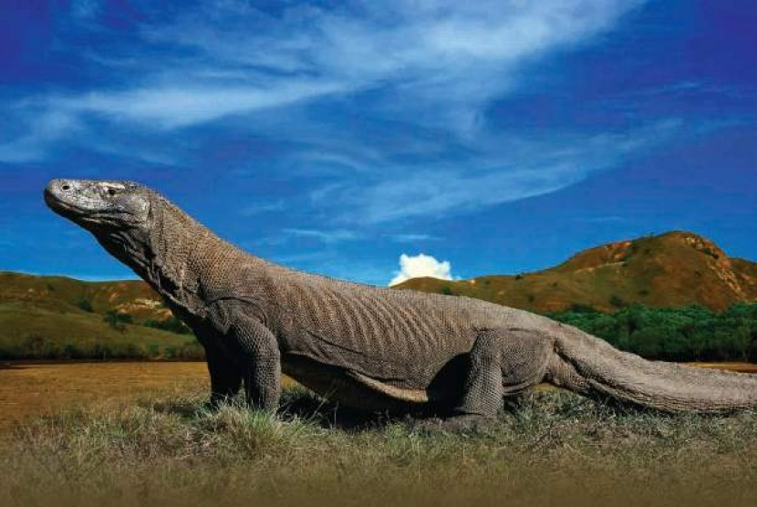
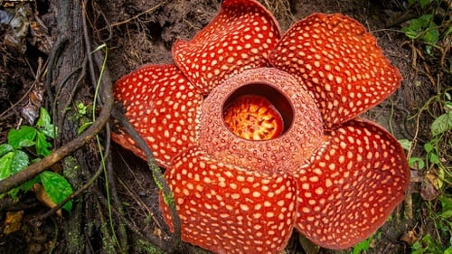
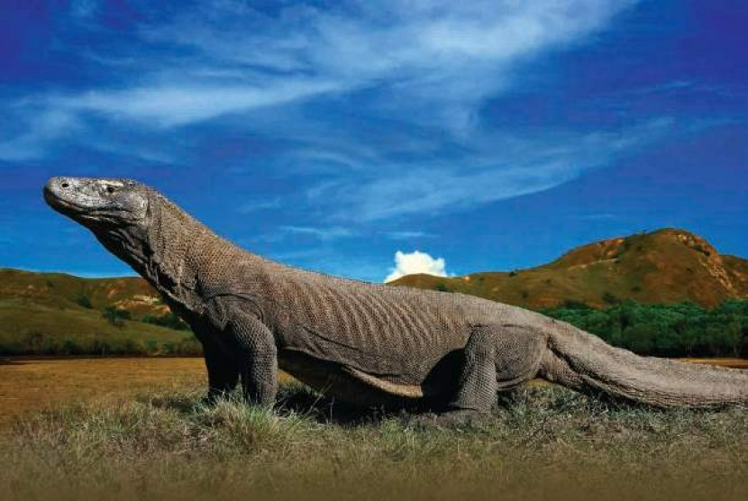
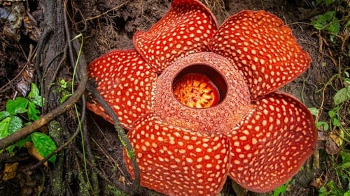

PROFIL
| NIM | : H071201073 |
| Nama | : Dhian |
| Tempat/Tanggal Lahir | : Buton, 18 Februari 2003 |
| Jenis Kelamin | : Perempuan |
| Golongan Darah | : O |
| Agama | : Islam |
| Pekerjaan | : Mahasiswa |
| Kewarganegaraan | : WNI |
| Program Studi | : Sistem Informasi |
| Fakultas | : Matematika dan Ilmu Pengetahuan Alam |
| Institusi Pendidikan | : Universitas Hasanuddin |
PRODI
Program Studi Sistem Informasi merupakan program studi yang menggabungkan Ilmu Komputer dengan Ilmu lain. Sistem Informasi dan Sistem Informasi Manajemen berbeda, perbedaannya yaitu Sistem Informasi mengkaji ke bidang sains berbidang matematik, sedangkan Sistem Informasi Manajeman lebih ke penggabungan antara komputer dan bisnis. Program Studi Sistem Informasi di bawah naungan Fakultas Matematika dan Ilmu Pengetahuan Universitas Hasanuddin (FMIPA UNHAS), sebelum dinamakan sistem informasi dahulu prodi ini dinamakan Ilmu Komputer dan merupakan program studi ke-3 yang dikelola oleh Departemen Matematika. dan diresmikan dengan nama Sistem informasi pada bulan Desember 2020. salah satu alasan digantikan nama Ilmu Komputer ke Sistem Informasi ialah program studi sistem informasi memiliki area jangkauan yang lebih luas untuk dunia kerja, yaitu hampir merambah seluruh bidang yang berbasis pada kajian data. Adapun Prodi Matematika merupakan salah satu pondasi dari Prodi Sistem Informasi. Program ini memberikan kesempatan kepada para lulusan SMA atau sederajat yang terbaik untuk mendapatkan pendidikan dan keahlian di bidang sistem informasi pada tingkat sarjana. Program ini dirancang untuk memenuhi kebutuhan terhadap tenaga-tenaga yang terampil dan profesional di bidang sistem informasi/teknologi informasi.
Tercatat pula beberapa kerja sama dengan beberapa pihak. Salah satunya kerja sama dengan Pemerintah Daerah (Pemda) Luwu Utara dalam program E-Mall yang telah mendapat penghargaan dari Kementrian Komunikasi dan Informatika. Prodi ini bahkan telah membangun kerja sama dengan beberapa Perguruan Tinggi di Jepang dan Korea Selatan untuk mahasiswa yang ingin melanjutkan studi S2 atau mahasiswa yang ingin magang pada semester 6.
Program Studi Sarjana Sistem Informasi di Universitas Hasanuddin mencakup proses pembelajaran setara dengan 144 satuan kredit semester (SKS) yang dapat diselesaikan dalam waktu empat tahun. Mahasiswa berhak menyandang gelar Sarjana Ilmu Komputer (S.Kom.) setelah memperoleh minimum 144 SKS sesuai persyaratan kurikulum yang ditetapkan.
NEGARA
 



Indonesia, disebut juga dengan Negara Kesatuan Republik Indonesia(NKRI) atau Republik Indonesia (RI), Ibukota Indonesia adalah Jakarta. Indonesia merdeka pada tanggal 17 Agustus 1945. Indonesia adalah negara di Asia tenggara yang dilintasi oleh garis khatulistiwa,yang diapit oleh 2 benua yaitu benua Australia dan benua Asia, dan juga 2 samudra yaitu samudra Hindia dan samudra Pasifik. Indonesia memiliki jumlah penduduk terbesar ke-4 didunia dan negara yang berpenduduk Muslim terbesar didunia. Indonesia juga dikenal dengan negara yang memiliki banyak pulau sehingga disebut negara kepulauan,yang terdiri dari 17.504 pulau, oleh karena itu Indonesia terdiri dari beranekaragam. Indonesia adalah negara yang memiliki kekayaan alam yang sangat banyak dan beragam hutan 39.549.447 hektar di pulau sumatera, kalimantan, Dan sulawesi terdapat keanekaragaman hayati dan plasma nutfah terlengkap di dunia, jika hutan tersebut hilang maka bumi akan hancur karena bumi sangat tergantung pada hutan tropis untuk menjaga keseimbangan iklim selain ditopang oleh hutan hujan yang ada di amazon. Sehingga tidak heran mengapa Indonesia juga memiliki banyak flora dan faunanya yang beraneka ragam, bukan hanya terdapat pada hutan saja tetapi kekayaan lautnya pun tidak diragukan, kekayaannya itu antara lain terdapat banyak spesies ikan Hiu didunia yaitu 150 ribu,dll. Namun sayang-nya banyak juga ditemukan flora dan fauna yang terancam punah atau langkah akibat perdagangan satwa ilegal yang tak terkendali. Flora dan fauna yang tercancam antara lain Raflesia Arnoldii, Kantong semar, Anggrek Larat, Komodo, Burung Jalak Bali, Harimau Sumatera dll.